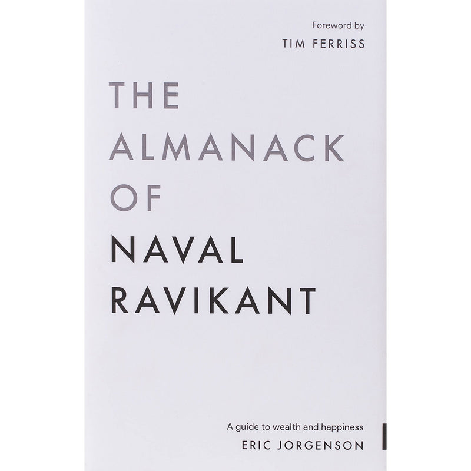

Library › Money & Finance
The Almanack of Naval Ravikant — Summary & Key Lessons

A guide to wealth and happiness — the collected wisdom of Silicon Valley's philosopher-investor, free forever.
📖 OPEN THE FULL INTERACTIVE BREAKDOWN →🌐 Read it in Hindi, Hinglish, Gujarati, Tamil & 22 more languages — free, with audio.
💡 The Big Idea
Naval Ravikant — AngelList founder, early investor in Uber and Twitter — became the internet's philosopher through tweetstorms and podcasts; Jorgenson organized it all into this free book. Two halves, one system: WEALTH (arm yourself with specific knowledge, accountability, and leverage — code and media are permissionless leverage that work while you sleep; play long-term games with long-term people) and HAPPINESS (a trainable skill, not a destination — peace is happiness at rest, desire is a contract you make with yourself to be unhappy until you get what you want). Escape competition through authenticity; no one can compete with you on being you.
🧠 The 6 Key Lessons
Lesson 1: Wealth ≠ Money ≠ Status
Part 1: Building Wealth
Three different games: Wealth is assets that earn while you sleep — businesses, code, media, investments. Money is how we transfer wealth — social credits for time. Status is your rank in the social hierarchy — a zero-sum game where someone must lose for you to win. Naval's foundational move: exit status games entirely (politics, prestige-chasing, keeping up) and play only positive-sum wealth games. The ethical unlock: wealth creation isn't extraction — technology and products create NEW value; everyone can be wealthy in principle. If you secretly despise wealth, it will elude you — you can't become what you resent.
📖 Example: Naval's test for spotting status players: they attack wealth-creators to elevate themselves (criticism is the status-seeker's currency, building is the wealth-seeker's). His own arc — a poor immigrant kid from Delhi washing dishes, discovering that reading… Read the full example →
⚡ Do this: Audit your week: hours spent on status games (image management, comparison, politicking) vs wealth games (building assets, learning rare skills). Reallocate one status-hour to a wealth-hour daily.
Lesson 2: Specific Knowledge: What Only You Can Do
Part 1: Specific Knowledge
Specific knowledge is what you cannot be trained for — because if it can be taught in school, someone cheaper (or some AI) can eventually replace you. It's found by following genuine curiosity and passion, not hot trends: it feels like play to you but looks like work to others. It's often technical or creative, built through apprenticeships rather than credentials, and it compounds because you'll happily do it for decades. Combine it with accountability (take risks under your own name) and society rewards you with responsibility, equity, and leverage. The career question isn't 'what's in demand?' but 'what am I uniquely built to supply?'
📖 Example: Naval's own specific knowledge: a hybrid of tech, investing, and philosophy expressed through short-form writing — assembled from an obsessive childhood reading habit, engineering school, startup scars, and thousands of hours of voluntary thinking about… Read the full example →
⚡ Do this: Write down what you do at a professional level that feels like play — the thing colleagues find hard and you find fun. That intersection is your specific knowledge; double your investment in it.
Lesson 3: Leverage: Code and Media Don't Sleep
Part 1: Leverage
Naval's taxonomy of leverage: Labor (people working for you — oldest, messiest, requires permission and management), Capital (money multiplying decisions — powerful but gated by trust), and the new class: Products with no marginal cost of replication — code and media. A podcast, book, app, or video is built once and serves millions while you sleep, and nobody's permission is required. This is the most democratic leverage in history: a kid with a laptop can out-distribute a broadcast empire. The formula for modern wealth: specific knowledge × accountability × permissionless leverage. Work as hard as you like — but make sure effort is multiplied, not merely spent.
📖 Example: Joe Rogan built a billion-dollar podcast from a garage; Naval's own tweetstorm 'How to Get Rich (without getting lucky)' — written once, in bed — has reached tens of millions and generated more opportunity than decades of meetings. Contrast the highest-paid… Read the full example →
⚡ Do this: Ship one piece of permissionless leverage this month: a blog post, a small tool, a video, an open-source repo. Once live, it works your night shift forever.
Lesson 4: Long-Term Games, Compound Interest & Judgment
Part 1: Patience & Judgment
All meaningful returns — in wealth, relationships, and knowledge — come from compound interest, and compounding requires LONG games: repeated interactions with the same people over decades, where trust lowers friction toward zero and payoffs turn exponential. Switching games constantly resets the curve. In an age of infinite leverage, judgment beats effort: one correct decision steering massive leverage outproduces years of hard work aimed wrong — so the highest-ROI activities are unglamorous: reading foundations (math, logic, evolution, economics), thinking clearly, and having the courage to hold unpopular but accurate views. 'I don't want to be the smartest; I want to be the least often wrong.'
📖 Example: Naval's Silicon Valley observation: the biggest fortunes went to people who found their game early and stayed — decades-long partnerships (Buffett-Munger being the canonical case) where reputation itself became the asset: intent no longer questioned, deals… Read the full example →
⚡ Do this: Name your 30-year game and your 30-year people. Cut one short-term game (quick flip, transactional relationship) this quarter and reinvest the energy in the compounding one.
Lesson 5: Happiness Is a Skill You Train
Part 2: Learning Happiness
Naval's most contrarian claim: happiness isn't circumstance, genetics, or luck — it's a trainable skill, and he took himself from 2/10 to 9/10 over a decade. The mechanics: happiness is fundamentally peace — the absence of desire gnawing at the present; every desire is 'a contract you sign to be unhappy until you get what you want,' so carry few, chosen deliberately (one big desire at a time, held consciously). Most misery is the mind time-traveling — replaying the past, rehearsing the future; the present is the only place life occurs. Train like a gym habit: meditation, sunlight, watching your thoughts, dropping anger, choosing to interpret events positively — every judgment of 'good/bad' is optional.
📖 Example: Naval's practices, stated plainly: an hour of morning meditation ('the ultimate app'), no alarm, daily workout, radically reduced news and social media, and the habit of catching himself mid-judgment ('who would I be without this thought?'). His test of… Read the full example →
⚡ Do this: Pick one desire to keep consciously; demote the rest to preferences. Then train daily: 20 minutes of meditation or silent sitting — and each time you judge something 'bad' this week, find one frame in which it's neutral or useful.
Lesson 6: Read, Decide, and Own Your Time
Part 2: Philosophy & Practice
The closing operating system: read what you love until you love to read (foundations over trends — a great book's first hundred pages beat a hundred summaries of hype); value your time at an aspirational hourly rate and ruthlessly refuse anything below it (outsource, decline, automate); and treat health as the first wealth — a fit body and calm mind are the foundation trade no salary justifies losing. Retirement, redefined: not stopping work, but the state where you stop sacrificing today for an imaginary tomorrow — reached by needing less, earning passively, or loving your work so much the distinction dissolves. The whole game: a calm mind, a fit body, a house full of love. These things cannot be bought — they must be earned.
📖 Example: Naval's hourly-rate discipline predates his wealth: even young and broke, he set an absurd personal rate ($5,000/hour in today's telling) and lived by it — skipping errands, returns, and arguments that 'paid' less. People laughed; the habit trained him to… Read the full example →
⚡ Do this: Set your aspirational hourly rate (uncomfortably high). For one week, run every task through it — delegate, drop, or automate what fails. And replace 30 minutes of feeds with 30 pages of foundations daily.
✅ 5-Step Action Plan
- Swap one status-hour for one wealth-hour daily.
- Name your specific knowledge; double down where work feels like play.
- Ship one permissionless-leverage asset this month.
- Commit to your 30-year game and people; cut one transactional game.
- Train happiness daily: meditation, one chosen desire, judgment-catching.
⚠️ When This Doesn't Work
Naval's leverage gospel — 'play long-term games with long-term people, use leverage' — is preached by winners and was followed to catastrophe by Bill Hwang, who used maximum leverage, played a long-term game with a prime broker, and lost $20 billion in days. Leverage multiplies judgment; if your judgment is average, leverage makes you spectacularly average. Take the specific knowledge and the accountability; be suspicious of anyone (including this book) who makes leverage sound like a shortcut.
💀 The Graveyard Proves It
📉 Archegos Capital — $20 Billion Vaporized in 2 Days. Burn: $20B personal + $10B for banks. Read the full case study →
💬 Best Quotes from The Almanack of Naval Ravikant
- “Seek wealth, not money or status. Wealth is assets that earn while you sleep.”
- “Play long-term games with long-term people.”
- “Desire is a contract you make with yourself to be unhappy until you get what you want.”
Interactive version: mark lessons as read, listen in your language, share quote cards.